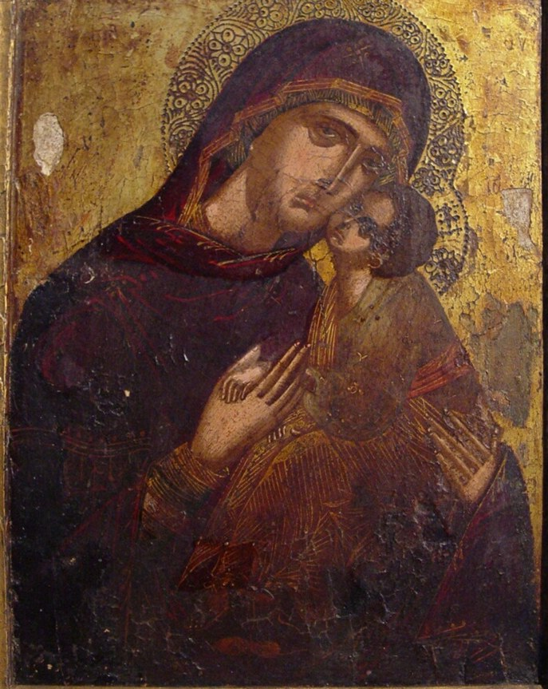

Icon with the Virgin and Child
Maker unknown (Cretan) · c. 1500 · Tempera on panel · 38 × 30 cm · Art Institute of Chicago
Free to use
Open in The ArtchiveFull-size file ↗

Maker unknown (Cretan) · c. 1500 · Tempera on panel · 38 × 30 cm · Art Institute of Chicago
Free to use
Open in The ArtchiveFull-size file ↗